Last updated: 2022-12-11
Checks: 7 0
Knit directory: IBIO870_FinalProject/
This reproducible R Markdown analysis was created with workflowr (version 1.7.0). The Checks tab describes the reproducibility checks that were applied when the results were created. The Past versions tab lists the development history.
Great! Since the R Markdown file has been committed to the Git repository, you know the exact version of the code that produced these results.
Great job! The global environment was empty. Objects defined in the global environment can affect the analysis in your R Markdown file in unknown ways. For reproduciblity it’s best to always run the code in an empty environment.
The command set.seed(20221207) was run prior to running
the code in the R Markdown file. Setting a seed ensures that any results
that rely on randomness, e.g. subsampling or permutations, are
reproducible.
Great job! Recording the operating system, R version, and package versions is critical for reproducibility.
Nice! There were no cached chunks for this analysis, so you can be confident that you successfully produced the results during this run.
Great job! Using relative paths to the files within your workflowr project makes it easier to run your code on other machines.
Great! You are using Git for version control. Tracking code development and connecting the code version to the results is critical for reproducibility.
The results in this page were generated with repository version 3877b2e. See the Past versions tab to see a history of the changes made to the R Markdown and HTML files.
Note that you need to be careful to ensure that all relevant files for
the analysis have been committed to Git prior to generating the results
(you can use wflow_publish or
wflow_git_commit). workflowr only checks the R Markdown
file, but you know if there are other scripts or data files that it
depends on. Below is the status of the Git repository when the results
were generated:
Ignored files:
Ignored: .Rhistory
Ignored: .Rproj.user/
Ignored: Output/
Ignored: Richness plot cleaned data.png
Ignored: Richness plot raw data.png
Untracked files:
Untracked: Workflow.png
Untracked: analysis/Workflow.png
Note that any generated files, e.g. HTML, png, CSS, etc., are not included in this status report because it is ok for generated content to have uncommitted changes.
These are the previous versions of the repository in which changes were
made to the R Markdown
(analysis/L1_Ecuador_BIEN_PlantData_Cleaning.Rmd) and HTML
(docs/L1_Ecuador_BIEN_PlantData_Cleaning.html) files. If
you’ve configured a remote Git repository (see
?wflow_git_remote), click on the hyperlinks in the table
below to view the files as they were in that past version.
| File | Version | Author | Date | Message |
|---|---|---|---|---|
| html | 4104f46 | Hazel J. Anderson | 2022-12-11 | Build site. |
| Rmd | 5651451 | Hazel J. Anderson | 2022-12-11 | update workflowr website |
| html | 5651451 | Hazel J. Anderson | 2022-12-11 | update workflowr website |
| html | 7760eea | Hazel J. Anderson | 2022-12-07 | knit to html files |
| Rmd | e8899c5 | Hazel J. Anderson | 2022-12-07 | update name cleaning for knitting to html |
| Rmd | 33226e1 | Hazel J. Anderson | 2022-12-07 | fix figure issue to print all figures in markdown and not save to file |
| Rmd | b6ccb79 | Hazel J. Anderson | 2022-12-07 | add data subsetting to simplifiy dataset by removing unnecessary columns |
| Rmd | 5f91a6a | Hazel J. Anderson | 2022-12-07 | convert file structure |
data_path <- file.path('G:/My Drive/IBIO 870/Final project/data/L0')
output_path <- file.path('G:/My Drive/IBIO 870/Final project/data/L1')library(bdc)
library(bdDwC)
library(bdvis)database <- read.csv(file.path(data_path,"Ecuador_BIEN_occurrence.csv"))# darwinizing a dataset
config <- read.csv(file.path(output_path,"configuration table.csv"))
print(config) nameOld nameNew matchType
1 catalog_number catalogNumber Darwinized
2 collection_code collectionCode Darwinized
3 country country Darwinized
4 county county Darwinized
5 custodial_institution_codes institutionCode Darwinized
6 dataowner ownerInstitutionCode Darwinized
7 dataset datasetName Darwinized
8 datasource collectionID Darwinized
9 datasource_id datasetID Darwinized
10 date_collected verbatimEventDate Darwinized
11 date_identified dateIdentified Darwinized
12 elevation_m verbatimElevation Darwinized
13 identification_remarks identificationRemarks Darwinized
14 identified_by identifiedBy Darwinized
15 latitude decimalLatitude Darwinized
16 locality verbatimLocality Darwinized
17 longitude decimalLongitude Darwinized
18 observation_type basisOfRecord Darwinized
19 record_number recordNumber Darwinized
20 recorded_by recordedBy Darwinized
21 scrubbed_taxonomic_status taxonomicStatus Darwinized
22 state_province stateProvince Darwinized
23 verbatim_family family Darwinized
24 verbatim_scientific_name scientificName Darwinized# rename dataset fields
database <- renameUserData(database, config)Modified from https://brunobrr.github.io/bdc/articles/prefilter.html
# Flag records missing species names
check_pf <-
bdc_scientificName_empty(
data = database,
sci_name = "scientificName")
bdc_scientificName_empty:
Flagged 0 records.
One column was added to the database.# Flag records missing partial or complete information on geographic coordinates
check_pf <- bdc_coordinates_empty(
data = check_pf,
lat = "decimalLatitude",
lon = "decimalLongitude")
bdc_coordinates_empty:
Flagged 28540 records.
One column was added to the database.# Flag records with out-of-range coordinates: latitude > 90 or -90; longitude >180 or -180
check_pf <- bdc_coordinates_outOfRange(
data = check_pf,
lat = "decimalLatitude",
lon = "decimalLongitude")
bdc_coordinates_outOfRange:
Flagged 0 records.
One column was added to the database.# Check record sources of your dataset using:
check_pf %>%
dplyr::group_by(basisOfRecord) %>%
dplyr::summarise(n = dplyr::n())# A tibble: 2 × 2
basisOfRecord n
<chr> <int>
1 plot 6383
2 specimen 297648check_pf <- bdc_basisOfRecords_notStandard(
data = check_pf,
basisOfRecord = "basisOfRecord",
names_to_keep = "all")
bdc_basisOfRecords_notStandard:
Flagged 6383 of the following specific nature:
plot
One column was added to the database.# Deriving country names for records missing country names
check_pf <- bdc_country_from_coordinates(
data = check_pf,
lat = "decimalLatitude",
lon = "decimalLongitude",
country = "country")Loading required package: rnaturalearthLoading required package: rnaturalearthdataAll records already had country information. Nothing was done!# Standardizing country names and getting country code information
check_pf <- bdc_country_standardized(
data = check_pf,
country = "country"
)Loading auxiliary data: country names from wikipediaLoading auxiliary data: world map and country isoStandardizing country namescountry found: Ecuador
bdc_country_standardized:
The country names of 0 records were standardized.
Two columns ('country_suggested' and 'countryCode') were added to the database.# Correcting latitude and longitude transposed
check_pf <-
bdc_coordinates_transposed(
data = check_pf,
id = "collectionID",
sci_names = "scientificName",
lat = "decimalLatitude",
lon = "decimalLongitude",
country = "country_suggested",
countryCode = "countryCode",
border_buffer = 0.2, # in decimal degrees (~22 km at the equator)
save_outputs = FALSE
)Loading required package: readrCorrecting latitude and longitude transposed4370 occurrences will be testedProcessing occurrences from: EC (4370)
bdc_coordinates_transposed:
Corrected 300969 records.
One columns were added to the database.# Records outside one or multiple reference countries
check_pf <-
bdc_coordinates_country_inconsistent(
data = check_pf,
country_name = "Ecuador",
country = "country_suggested",
lon = "decimalLongitude",
lat = "decimalLatitude",
dist = 0.1 # in decimal degrees (~11 km at the equator)
)Spherical geometry (s2) switched offdist is assumed to be in decimal degrees (arc_degrees).although coordinates are longitude/latitude, st_intersection assumes that they
are planar
bdc_coordinates_country_inconsistent:
Flagged 13 records.
One column was added to the database.# Report
check_pf <- bdc_summary_col(data = check_pf)
bdc_summary_col:
Flagged 34730 records.
One column was added to the database.report <-
bdc_create_report(data = check_pf,
database_id = "database_id",
workflow_step = "prefilter",
save_report = FALSE)Loading required package: DTreport# Figures
bdc_create_figures(data = check_pf,
database_id = "database_id",
workflow_step = "prefilter",
save_figures = FALSE)Loading required package: cowplotLoading required package: rworldmapLoading required package: sp### Welcome to rworldmap ###For a short introduction type : vignette('rworldmap')Loading required package: ggplot2Loading required package: hexbin$.coordinates_empty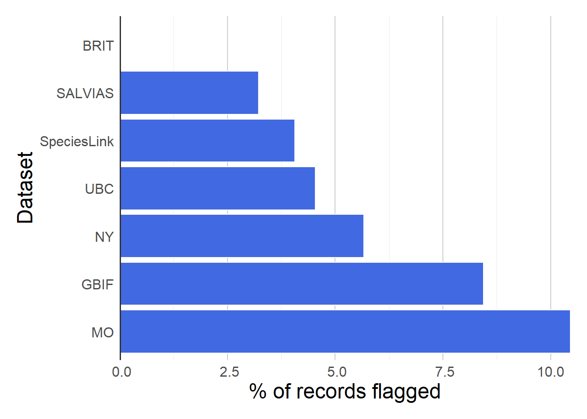
$.coordinates_country_inconsistent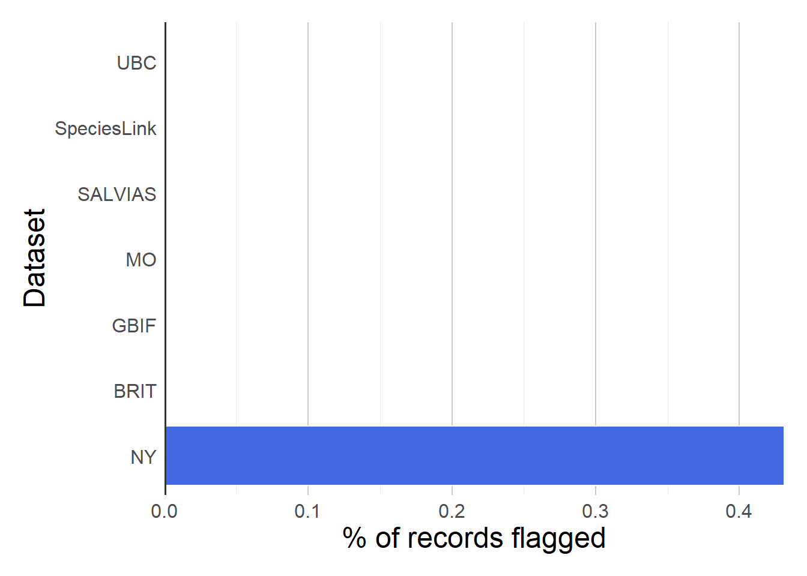
$.summary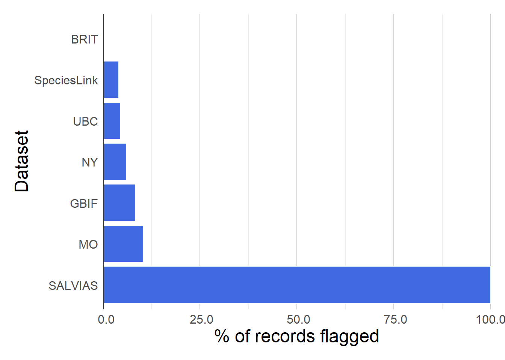
$summary_all_tests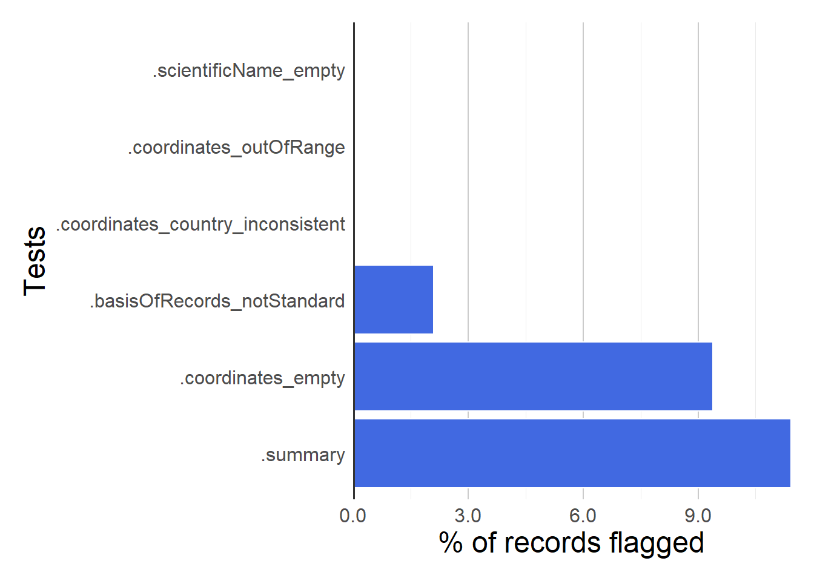
$.coordinates_country_inconsistent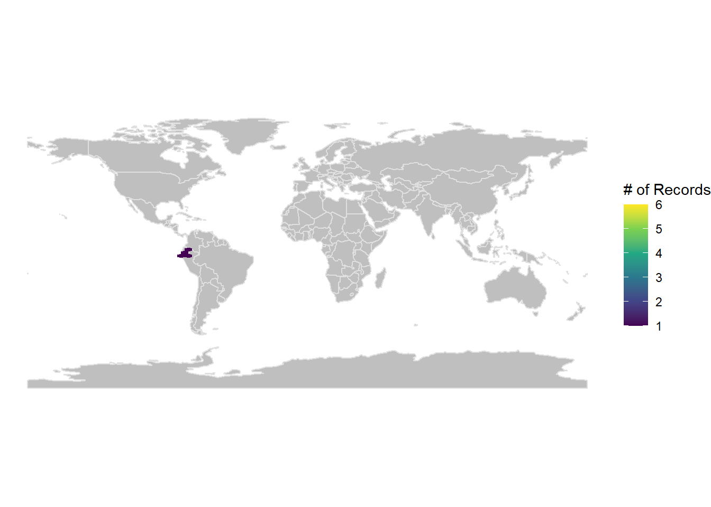
# Filter out flags
database <-
check_pf %>%
dplyr::filter(.summary == TRUE) %>%
bdc_filter_out_flags(data = ., col_to_remove = "all")
bdc_fiter_out_flags:
The following columns were removed from the database:
.scientificName_empty, .coordinates_empty, .coordinates_outOfRange, .basisOfRecords_notStandard, .coordinates_country_inconsistent, .summaryModified from https://brunobrr.github.io/bdc/articles/time.html
check_time <-
bdc_eventDate_empty(data = database, eventDate = "verbatimEventDate")
bdc_eventDate_empty:
Flagged 24892 records.
One column was added to the database.check_time <-
bdc_year_from_eventDate(data = check_time, eventDate = "verbatimEventDate")
bdc_year_from_eventDate:
Four-digit year were extracted from 244409 records.check_time <-
bdc_year_outOfRange(data = check_time,
eventDate = "year",
year_threshold = 1800)
bdc_year_outOfRange:
Flagged 101 records.
One column was added to the database.check_time <- bdc_summary_col(data = check_time)
bdc_summary_col:
Flagged 24993 records.
One column was added to the database.report <-
bdc_create_report(data = check_time,
database_id = "database_id",
workflow_step = "time",
save_report = FALSE)
reportbdc_create_figures(data = check_time,
database_id = "database_id",
workflow_step = "time",
save_figures = FALSE)$.eventDate_empty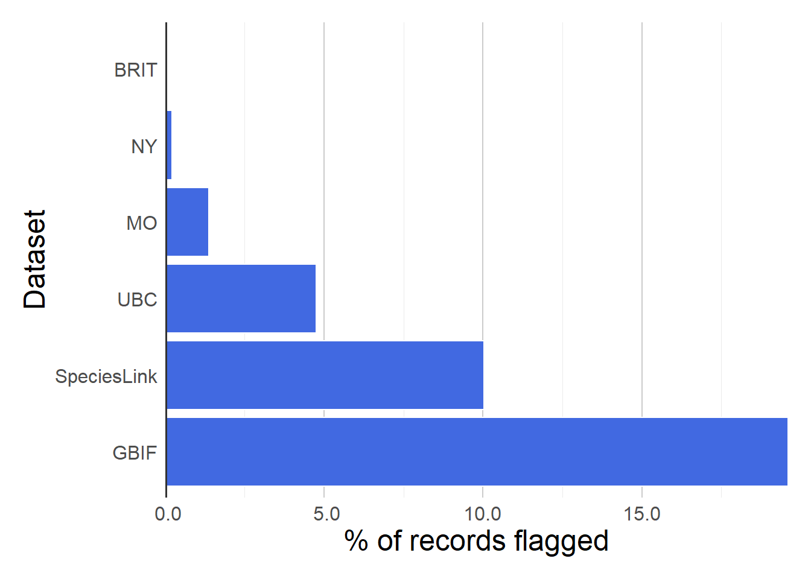
$.year_outOfRange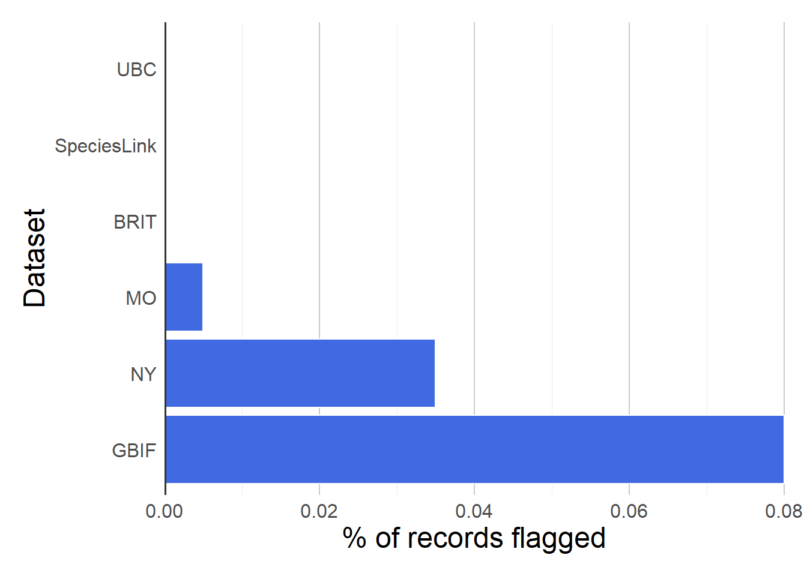
$.summary
$summary_all_tests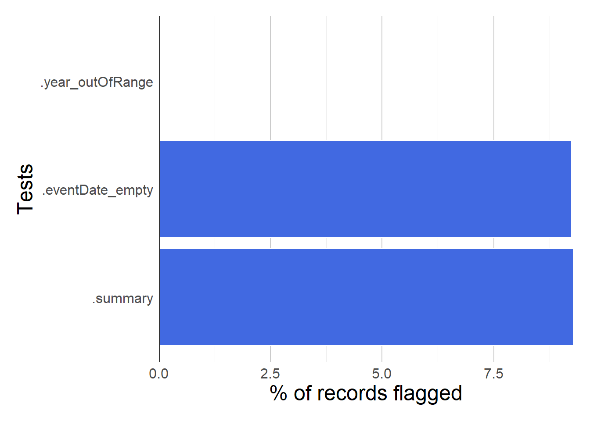
$year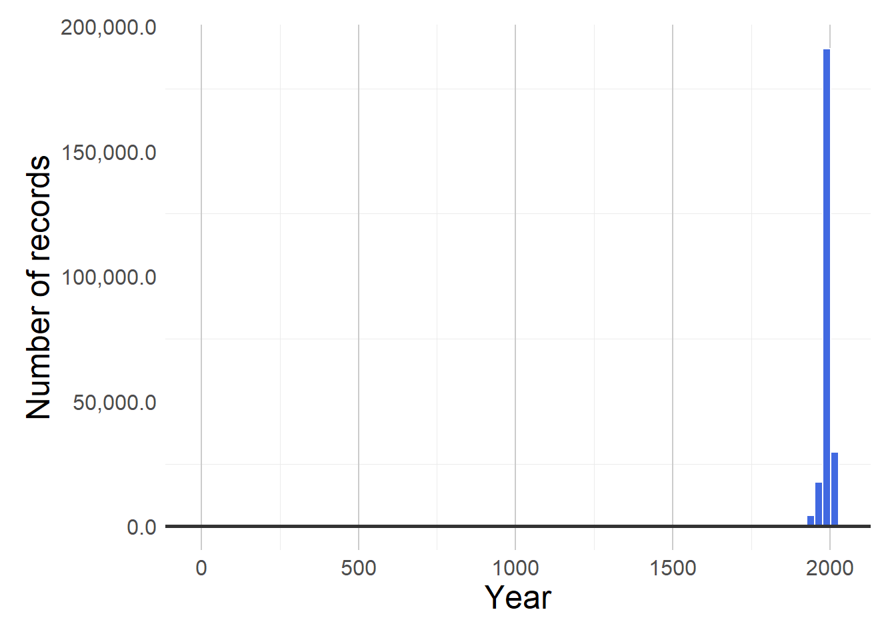
database <-
check_time %>%
dplyr::filter(.summary == TRUE) %>%
bdc_filter_out_flags(data = ., col_to_remove = "all")
bdc_fiter_out_flags:
The following columns were removed from the database:
.eventDate_empty, .year_outOfRange, .summaryModified from https://brunobrr.github.io/bdc/articles/space.html
check_space <-
bdc_coordinates_precision(
data = database,
lon = "decimalLongitude",
lat = "decimalLatitude",
ndec = c(0, 1) # number of decimals to be tested
)bdc_coordinates_precision:
Flagged 165 records
One column was added to the database.check_space <-
CoordinateCleaner::clean_coordinates(
x = check_space,
lon = "decimalLongitude",
lat = "decimalLatitude",
species = "scientificName",
countries = ,
tests = c(
"capitals", # records within 2km around country and province centroids
"centroids", # records within 1km of capitals centroids
"duplicates", # duplicated records
"equal", # records with equal coordinates
"gbif", # records within 1 degree (~111km) of GBIF headsquare
"institutions", # records within 100m of zoo and herbaria
"outliers", # outliers
"zeros", # records with coordinates 0,0
"urban" # records within urban areas
),
capitals_rad = 2000,
centroids_rad = 1000,
centroids_detail = "both", # test both country and province centroids
inst_rad = 100, # remove zoo and herbaria within 100m
outliers_method = "quantile",
outliers_mtp = 5,
outliers_td = 1000,
outliers_size = 10,
range_rad = 0,
zeros_rad = 0.5,
capitals_ref = NULL,
centroids_ref = NULL,
country_ref = NULL,
country_refcol = "countryCode",
inst_ref = NULL,
range_ref = NULL,
# seas_ref = continent_border,
# seas_scale = 110,
urban_ref = NULL,
value = "spatialvalid" # result of tests are appended in separate columns
)Testing coordinate validityFlagged 0 records.Testing equal lat/lonFlagged 0 records.Testing zero coordinatesFlagged 0 records.Testing country capitalsFlagged 0 records.Testing country centroidsFlagged 1 records.Testing urban areasDownloading urban areas via rnaturalearthOGR data source with driver: ESRI Shapefile
Source: "C:\Users\hj152\AppData\Local\Temp\Rtmpu8IOwb", layer: "ne_50m_urban_areas"
with 2143 features
It has 4 fields
Integer64 fields read as strings: scalerank Flagged 42 records.Testing geographic outliersWarning in cc_outl(otl_test, lon = lon, lat = lat, species = species, method =
outliers_method, : Species with fewer than 7 unique records will not be tested.Flagged 449 records.Testing GBIF headquarters, flagging records around CopenhagenFlagged 0 records.Testing biodiversity institutionsFlagged 0 records.Testing duplicatesFlagged 212680 records.Flagged 213068 of 244308 records, EQ = 0.87.check_space <- bdc_summary_col(data = check_space)Column '.summary' already exist. It will be updated
bdc_summary_col:
Flagged 213210 records.
One column was added to the database.check_space %>%
dplyr::filter(.summary == FALSE) %>% # map only records flagged as FALSE
bdc_quickmap(
data = .,
lon = "decimalLongitude",
lat = "decimalLatitude",
col_to_map = ".summary",
size = 0.9
)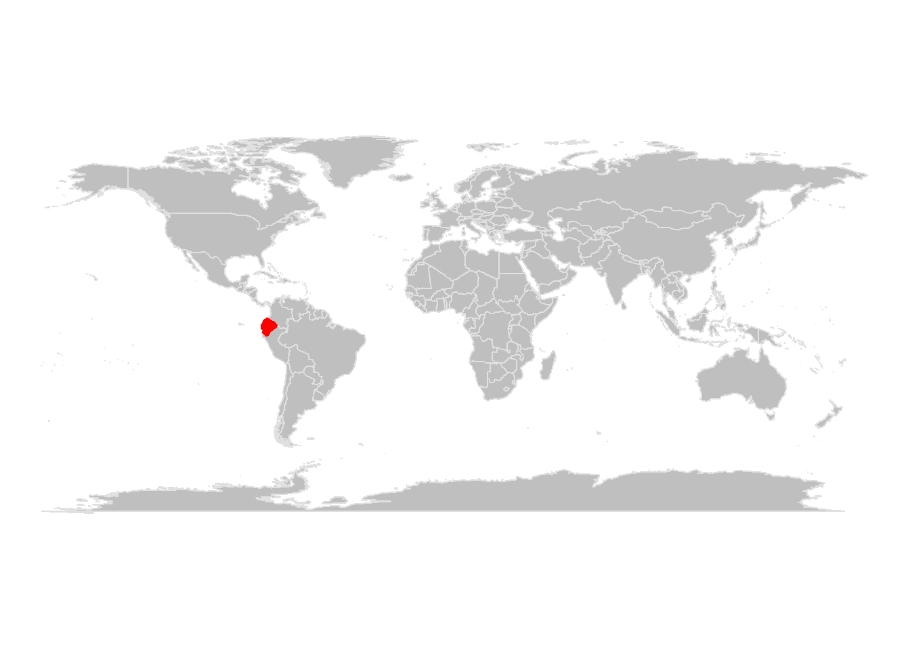
report <-
bdc_create_report(data = check_space,
database_id = "database_id",
workflow_step = "space",
save_report = FALSE)
reportbdc_create_figures(data = check_space,
database_id = "database_id",
workflow_step = "space",
save_figures = FALSE)$.cen
$.otl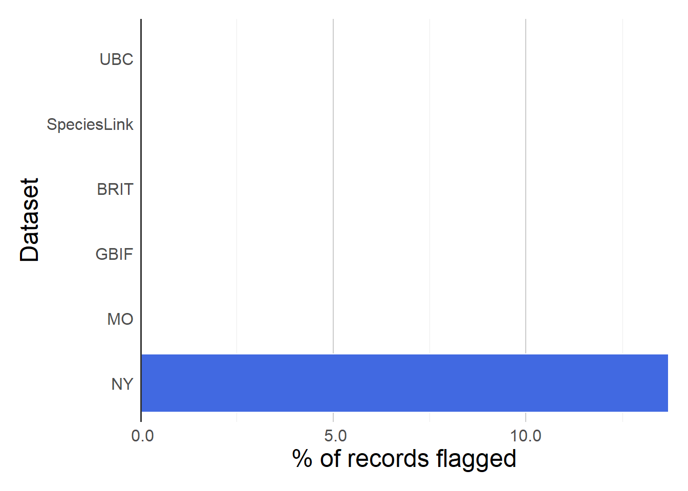
$.dpl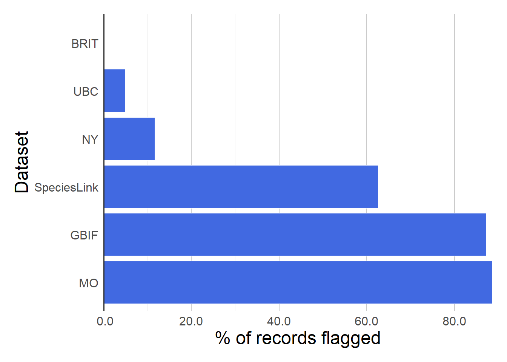
$.rou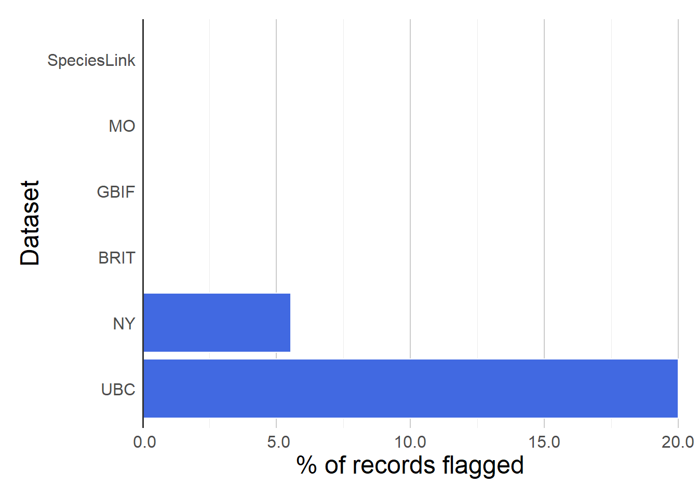
$.urb
$.summary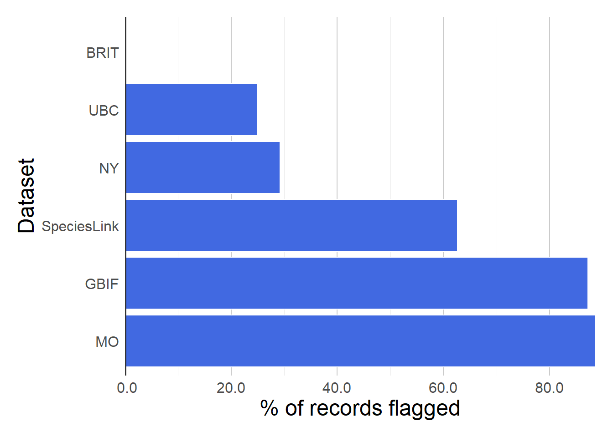
$summary_all_tests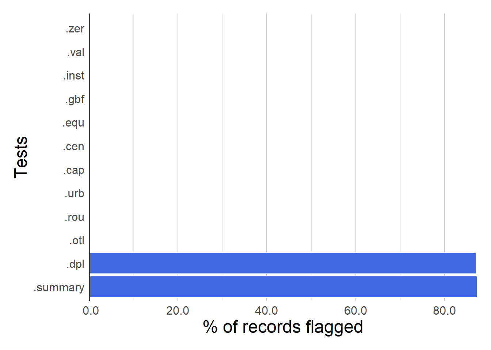
$.cen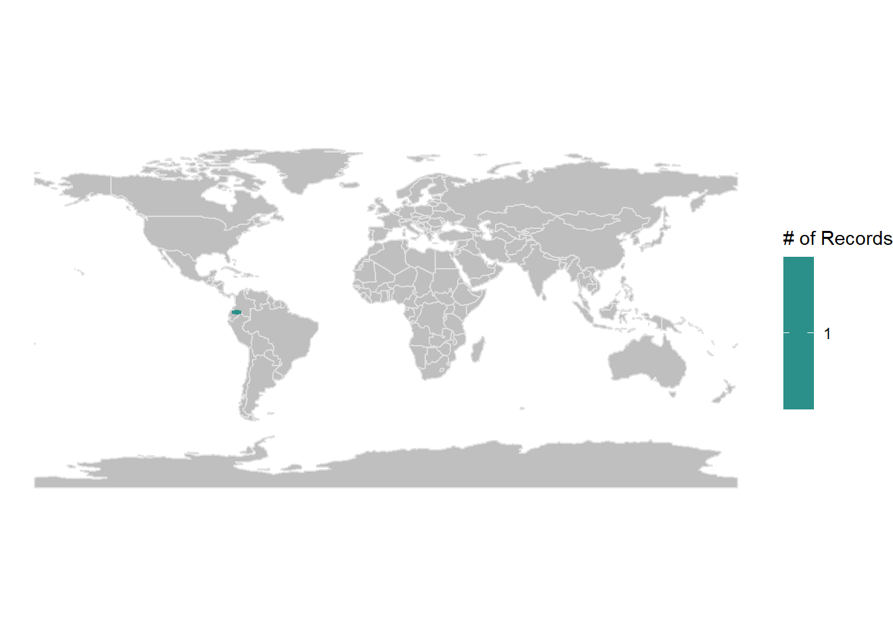
$.otl
$.dpl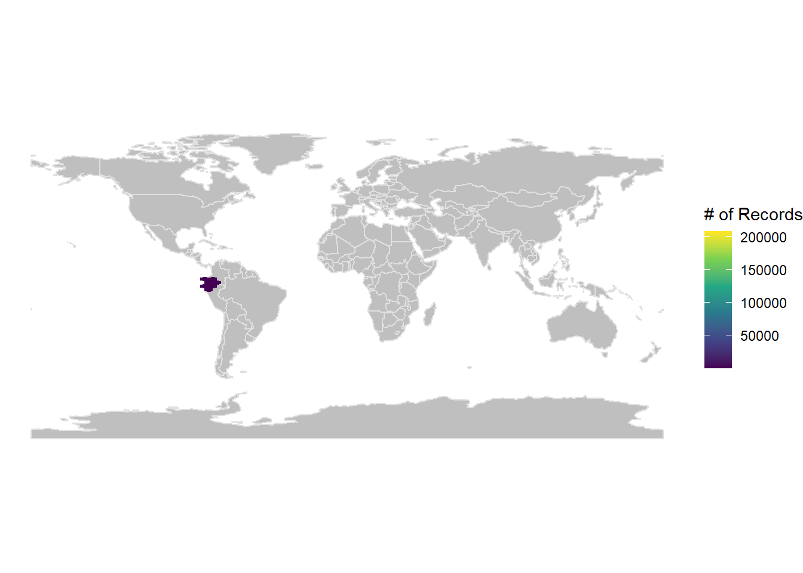
$.rou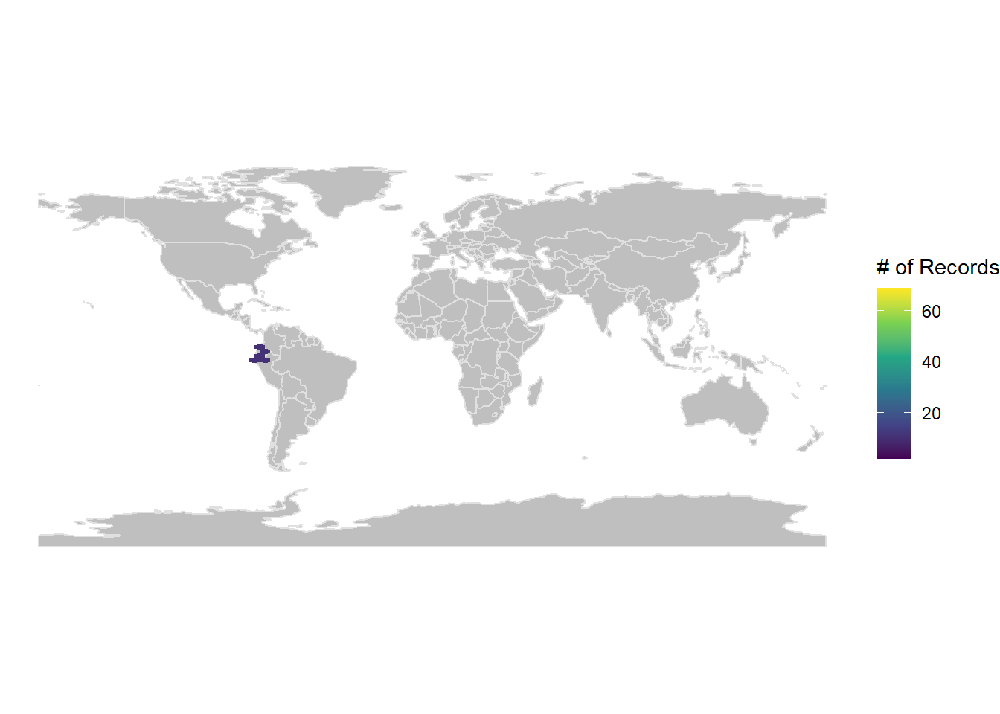
$.urb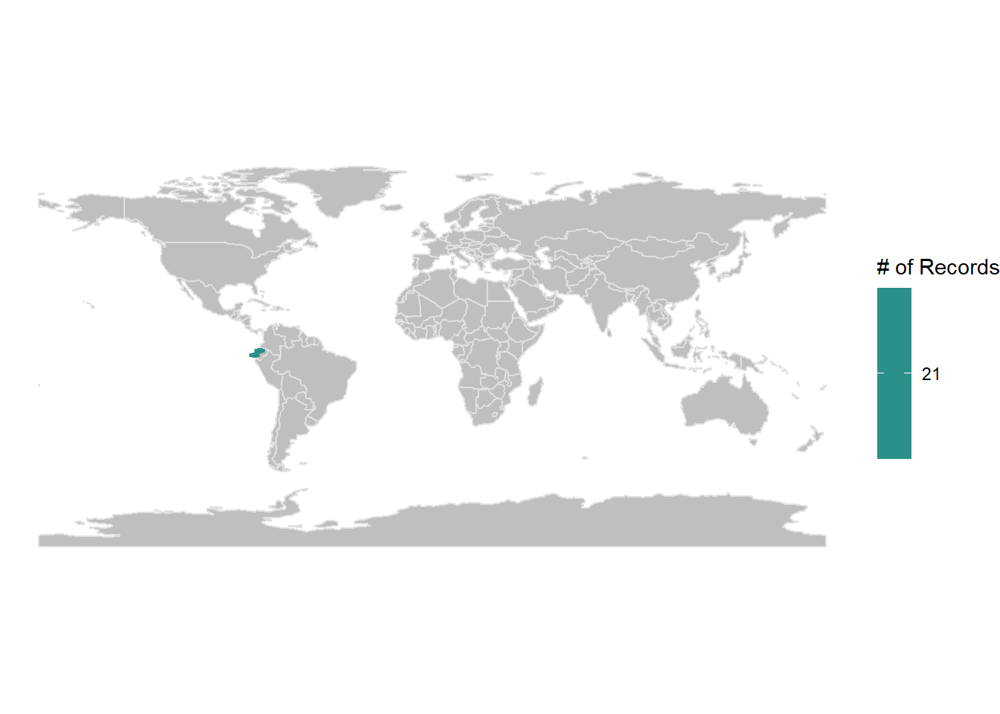
database <-
check_space %>%
dplyr::filter(.summary == TRUE) %>%
bdc_filter_out_flags(data = ., col_to_remove = "all")
bdc_fiter_out_flags:
The following columns were removed from the database:
.rou, .val, .equ, .zer, .cap, .cen, .urb, .otl, .gbf, .inst, .dpl, .summaryModified from https://brunobrr.github.io/bdc/articles/taxonomy.html
parse_names <-
bdc_clean_names(sci_names = database$scientificName, save_outputs = FALSE)
>> Family names prepended to scientific names were flagged and removed from 1 records.>> Terms denoting taxonomic uncertainty were flagged and removed from 5 records.>> Other issues, capitalizing the first letter of the generic name, replacing empty names by NA, and removing extra spaces, were flagged and corrected or removed from 4 records.>> Infraspecific terms were flagged and removed from 1162 records.parse_names <-
parse_names %>%
dplyr::select(.uncer_terms, names_clean)
database <- dplyr::bind_cols(database, parse_names)#not run for knit version - error with database
#query_names <- bdc_query_names_taxadb(
# sci_name = database$names_clean,
# replace_synonyms = TRUE, # replace synonyms by accepted names?
# suggest_names = TRUE, # try to found a candidate name for misspelled names?
# suggestion_distance = 0.9, # distance between the searched and suggested names
# db = "gbif", # taxonomic database
# parallel = TRUE, # should parallel processing be used?
# ncores = 8, # number of cores to be used in the parallelization process
# export_accepted = TRUE # save names linked to multiple accepted names
#)
#save(query_names, file = "~analysis/query_names.Rdata")
load(file.path(output_path,"query_names.Rdata"))database <-
database %>%
dplyr::rename(verbatim_scientificName = scientificName) %>%
dplyr::select(-names_clean) %>%
dplyr::bind_cols(., query_names)New names:
• `family` -> `family...3`
• `taxonomicStatus` -> `taxonomicStatus...9`
• `taxonomicStatus` -> `taxonomicStatus...46`
• `family` -> `family...52`report <-
bdc_create_report(data = database,
database_id = "database_id",
workflow_step = "taxonomy",
save_report = FALSE)
reportunresolved_names <-
bdc_filter_out_names(data = database,
col_name = "notes",
taxonomic_status = "accepted",
opposite = TRUE)output <-
bdc_filter_out_names(
data = database,
taxonomic_status = "accepted",
opposite = FALSE
)output <- format_bdvis(output, Latitude = "decimalLatitude", Longitude = "decimalLongitude", Date_collected = "verbatimEventDate", Scientific_name = "scientificName")Mapping via individual parametersChanged "decimalLatitude" to "Latitude"Changed "decimalLongitude" to "Longitude"Changed "verbatimEventDate" to "Date_collected"Changed "scientificName" to "Scientific_name"bdsummary(output)
Total no of records = 28045
Temporal coverage...
Date range of the records from 0008-04-29 to 2018-04-15
Taxonomic coverage...
No of Families : 0
No of Genus : 0
No of Species : 11474
Spatial coverage ...
Bounding box of records -4.79138889 , -80.917 - 1.38472 , -75.36639
Degree celles covered : 7
% degree cells covered : 23.3333333333333 bdcalendarheat(output)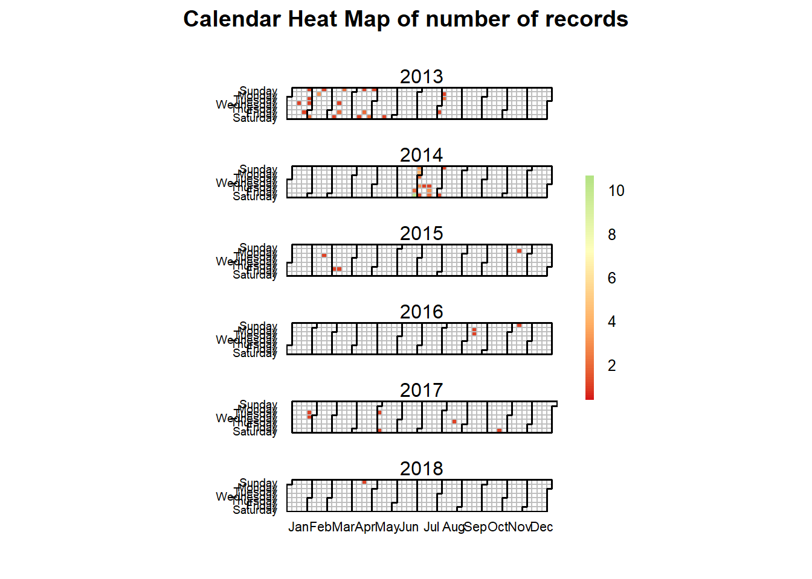
bdcomplete(output)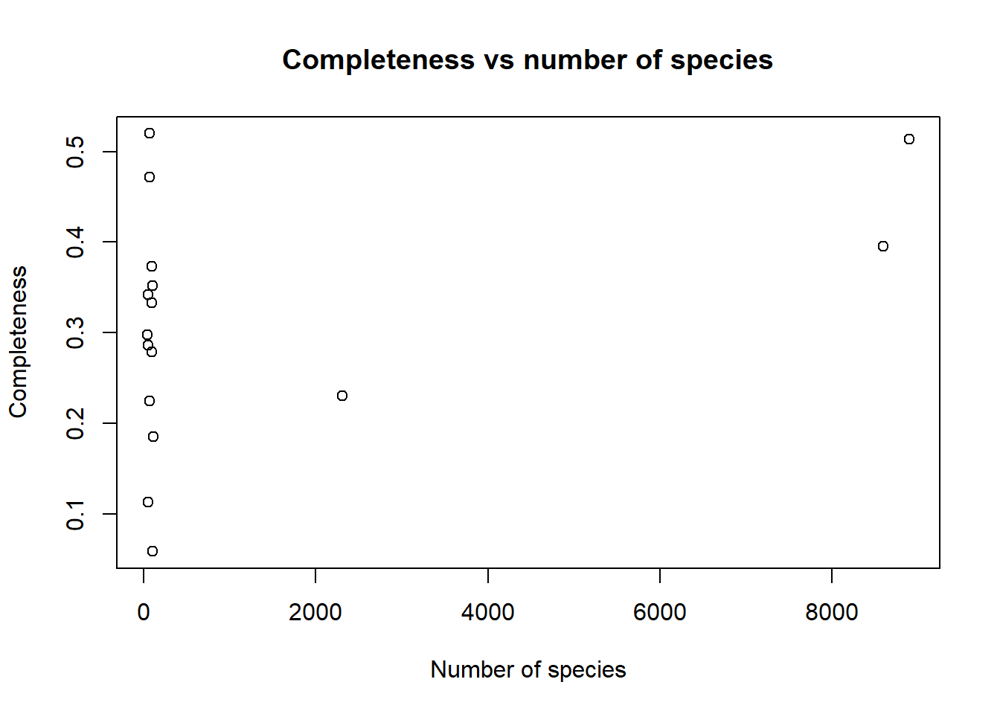
Cell_id nrec Sobs Sest c
1 1 130 94 252.0323 0.37296813
2 7 55 41 137.8381 0.29745042
3 8 116 97 348.4066 0.27841035
4 13 54 48 167.5833 0.28642466
5 14 117 108 584.1167 0.18489457
6 15 56 54 480.2143 0.11244980
7 19 10858 8595 21720.4291 0.39571041
8 20 12122 8895 17320.8846 0.51354190
9 21 72 51 148.9791 0.34232991
10 22 131 72 138.4637 0.51999188
11 25 84 67 298.7698 0.22425289
12 26 176 94 282.3618 0.33290627
13 27 113 71 150.4524 0.47191011
14 28 2702 2306 10027.6767 0.22996354
15 32 150 101 286.9169 0.35201835
16 38 107 105 1797.6333 0.05841013distrigraph(output, ptype = "species")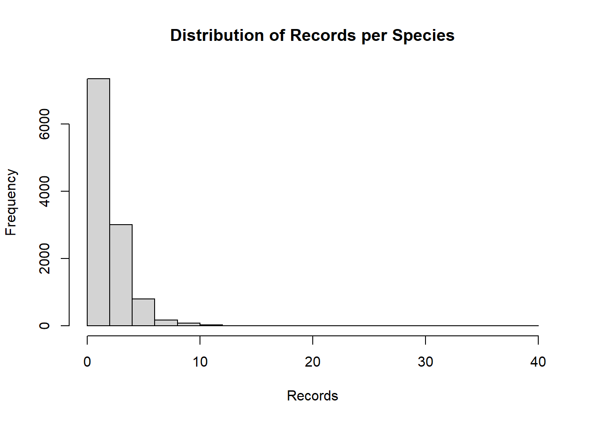
distrigraph(output, ptype = "efforts")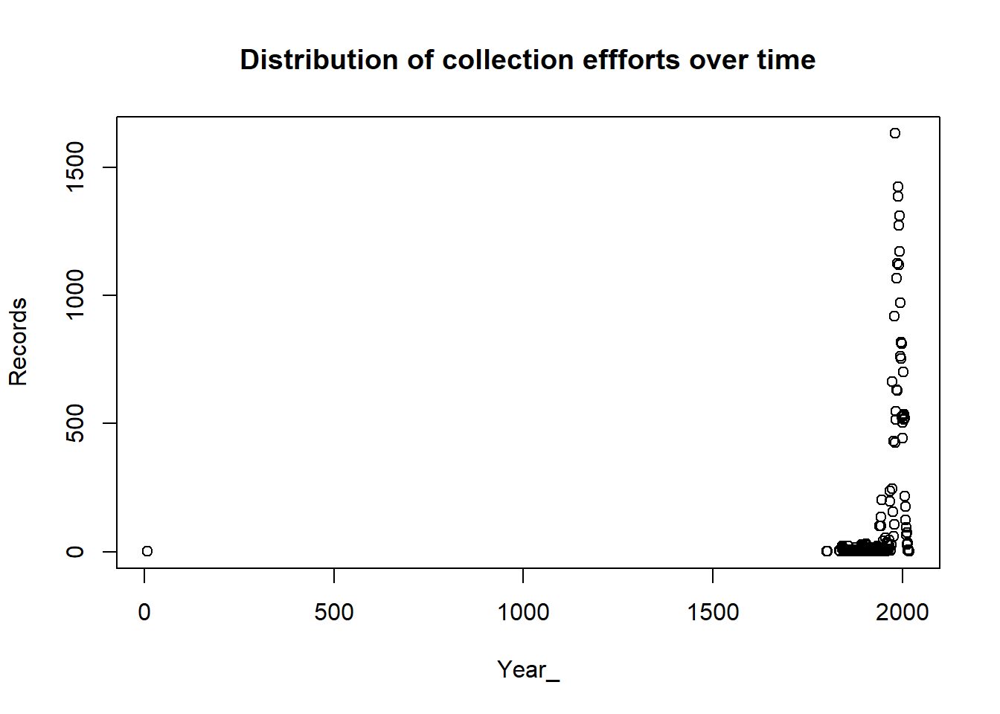
distrigraph(output, ptype = "cell")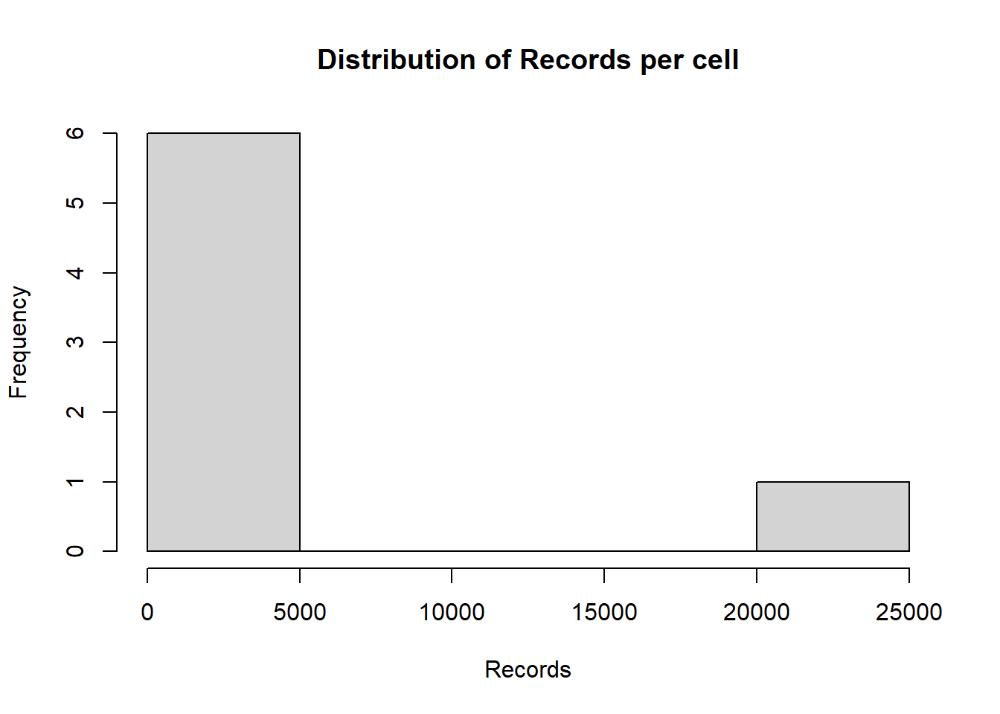
distrigraph(output, ptype = "effortspecies")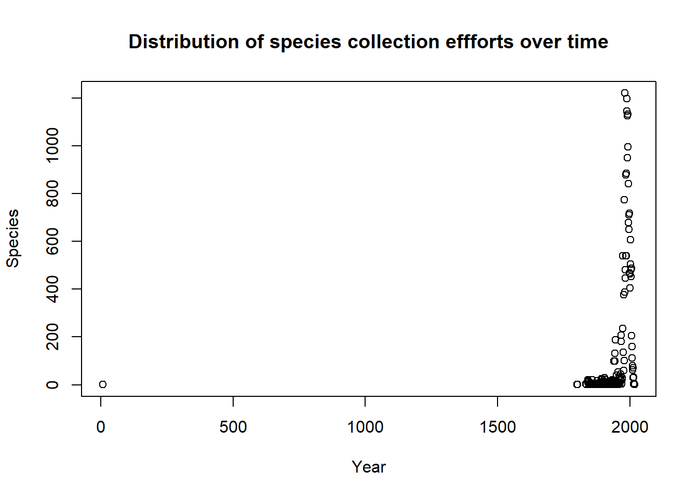
mapgrid(output, ptype = "species", region = "Ecuador")Rendering map...plotting 29 tiles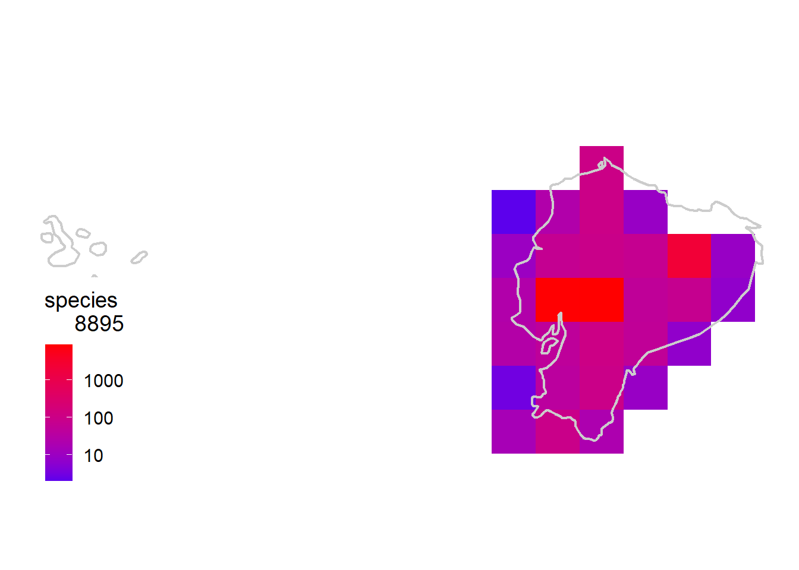
# remove columns not needed for analysis
output <- subset(output, select = c('Scientific_name', "Latitude", "Longitude", "Date_collected", "year", "verbatimElevation"))
# subset of data with elevation information
output_withElevation <-subset(output, output$verbatimElevation != "NA",)# Export the data into a CSV file
ecuador_BIEN_cleaned_path <- file.path(output_path,"Ecuador_BIEN_plant_cleaned.csv")
write.csv(output, file = ecuador_BIEN_cleaned_path)
sessionInfo()R version 4.2.2 (2022-10-31 ucrt)
Platform: x86_64-w64-mingw32/x64 (64-bit)
Running under: Windows 10 x64 (build 22621)
Matrix products: default
locale:
[1] LC_COLLATE=English_United States.utf8
[2] LC_CTYPE=English_United States.utf8
[3] LC_MONETARY=English_United States.utf8
[4] LC_NUMERIC=C
[5] LC_TIME=English_United States.utf8
attached base packages:
[1] stats graphics grDevices utils datasets methods base
other attached packages:
[1] RSQLite_2.2.19 hexbin_1.28.2 ggplot2_3.4.0
[4] rworldmap_1.3-6 sp_1.5-1 cowplot_1.1.1
[7] DT_0.26 readr_2.1.3 rangeBuilder_2.0
[10] countrycode_1.4.0 rnaturalearthdata_0.1.0 rnaturalearth_0.1.0
[13] bdvis_0.2.33 bdDwC_0.1.15 bdc_1.1.2
[16] workflowr_1.7.0
loaded via a namespace (and not attached):
[1] spam_2.9-1 uuid_1.1-0 igraph_1.3.5
[4] plyr_1.8.8 lazyeval_0.2.2 shinydashboard_0.7.2
[7] crosstalk_1.2.0 RApiSerialize_0.1.2 gridBase_0.4-7
[10] digest_0.6.30 foreach_1.5.2 htmltools_0.5.4
[13] viridis_0.6.2 fansi_1.0.3 magrittr_2.0.3
[16] memoise_2.0.1 tzdb_0.3.0 shinyFiles_0.9.3
[19] RcppParallel_5.1.5 vroom_1.6.0 askpass_1.1
[22] prettyunits_1.1.1 colorspace_2.0-3 treemap_2.4-3
[25] blob_1.2.3 xfun_0.35 dplyr_1.0.10
[28] rgdal_1.6-2 tcltk_4.2.2 callr_3.7.3
[31] crayon_1.5.2 jsonlite_1.8.4 stringfish_0.15.7
[34] zoo_1.8-11 iterators_1.0.14 ape_5.6-2
[37] glue_1.6.2 gtable_0.3.1 maps_3.4.1
[40] arkdb_0.0.16 scales_1.2.1 taxadb_0.1.6
[43] oai_0.4.0 contentid_0.0.16 DBI_1.1.3
[46] Rcpp_1.0.9 plotrix_3.8-2 viridisLite_0.4.1
[49] xtable_1.8-4 progress_1.2.2 units_0.8-1
[52] foreign_0.8-83 bit_4.0.5 bold_1.2.0
[55] proxy_0.4-27 dotCall64_1.0-2 rgbif_3.7.4
[58] sqldf_0.4-11 htmlwidgets_1.5.4 httr_1.4.4
[61] RColorBrewer_1.1-3 geosphere_1.5-18 ellipsis_0.3.2
[64] farver_2.1.1 pkgconfig_2.0.3 reshape_0.8.9
[67] sass_0.4.4 dbplyr_2.2.1 utf8_1.2.2
[70] here_1.0.1 conditionz_0.1.0 crul_1.3
[73] labeling_0.4.2 tidyselect_1.2.0 rlang_1.0.6
[76] later_1.3.0 munsell_0.5.0 tools_4.2.2
[79] cachem_1.0.6 cli_3.4.1 gsubfn_0.7
[82] generics_0.1.3 evaluate_0.18 shinyBS_0.61.1
[85] stringr_1.5.0 fastmap_1.1.0 yaml_2.3.6
[88] sys_3.4.1 processx_3.8.0 knitr_1.41
[91] bit64_4.0.5 fs_1.5.2 purrr_0.3.5
[94] pbapply_1.6-0 nlme_3.1-160 whisker_0.4.1
[97] mime_0.12 taxize_0.9.100 xml2_1.3.3
[100] compiler_4.2.2 rstudioapi_0.14 curl_4.3.3
[103] e1071_1.7-12 tibble_3.1.8 bslib_0.4.1
[106] stringi_1.7.8 highr_0.9 ps_1.7.2
[109] fields_14.1 rgeos_0.5-9 lattice_0.20-45
[112] rgnparser_0.2.5.91 rnaturalearthhires_0.2.0 classInt_0.4-8
[115] shinyjs_2.1.0 vctrs_0.5.1 pillar_1.8.1
[118] lifecycle_1.0.3 jquerylib_0.1.4 maptools_1.1-5
[121] data.table_1.14.6 raster_3.6-11 httpuv_1.6.6
[124] R6_2.5.1 qs_0.25.4 promises_1.2.0.1
[127] gridExtra_2.3 KernSmooth_2.23-20 codetools_0.2-18
[130] assertthat_0.2.1 chron_2.3-58 proto_1.0.0
[133] openssl_2.0.5 CoordinateCleaner_2.0-20 rprojroot_2.0.3
[136] withr_2.5.0 httpcode_0.3.0 parallel_4.2.2
[139] hms_1.1.2 terra_1.6-47 grid_4.2.2
[142] class_7.3-20 rmarkdown_2.18 git2r_0.30.1
[145] sf_1.0-9 getPass_0.2-2 shiny_1.7.3